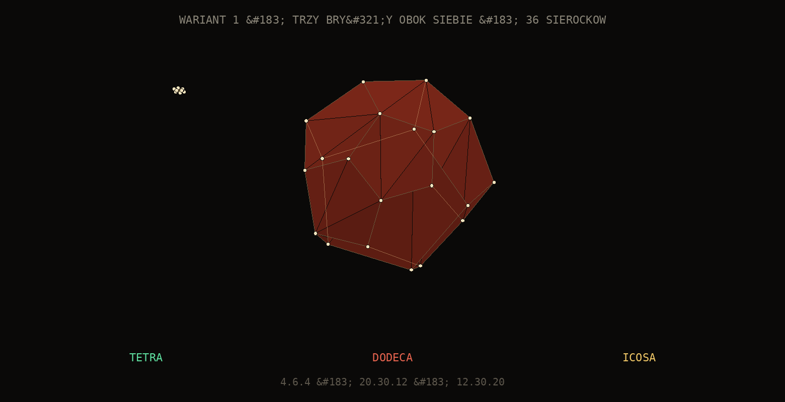
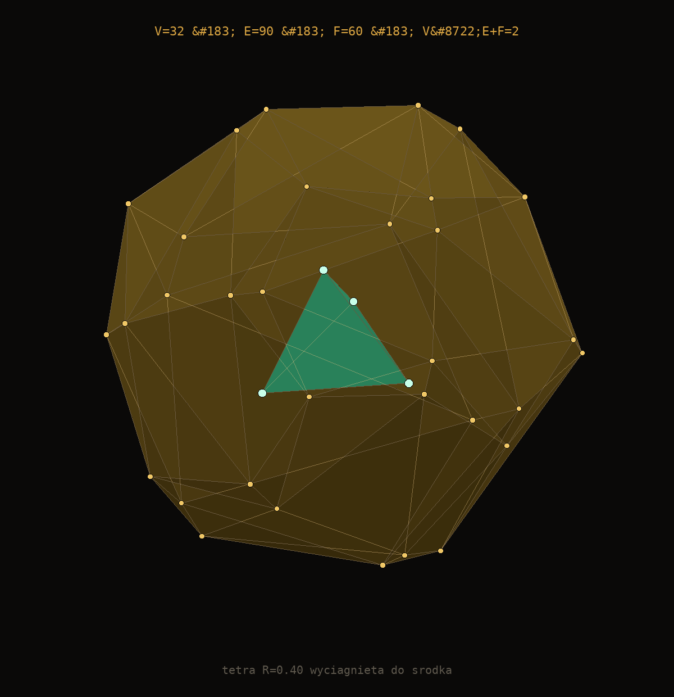
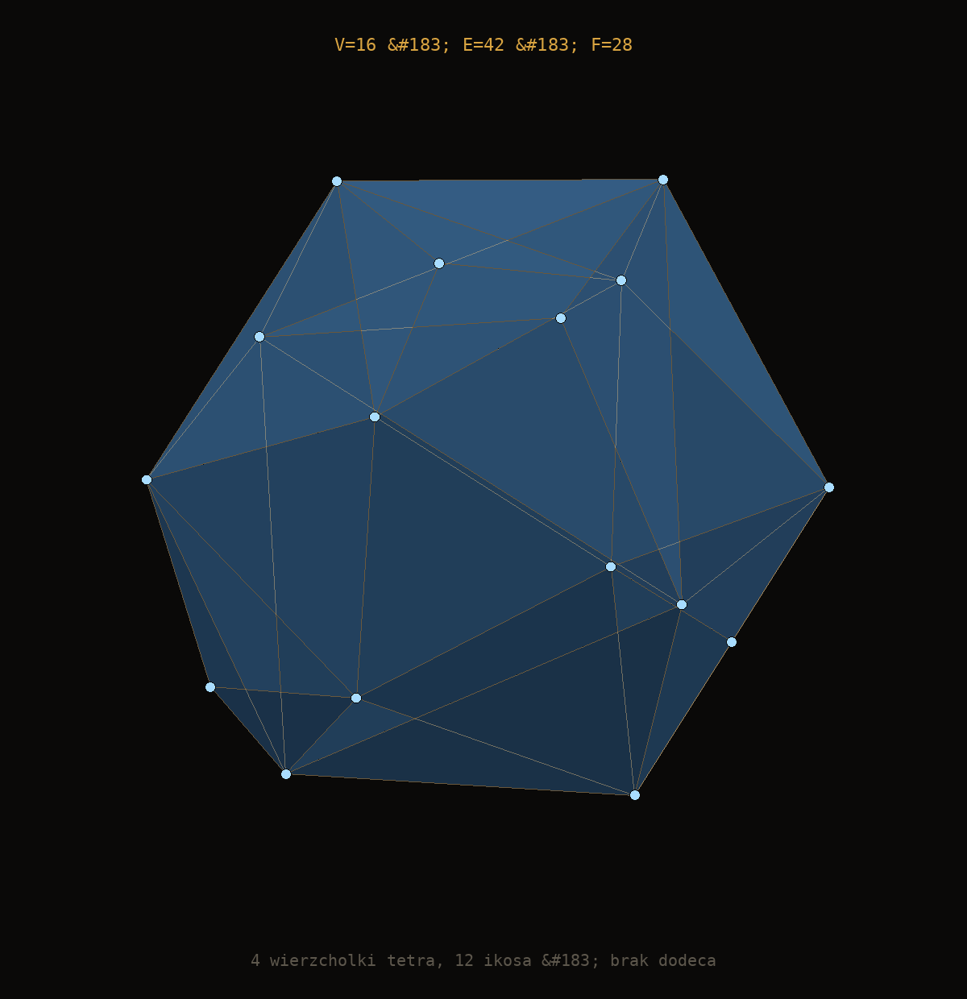

<!doctype html>
<html lang="pl">
<head>
<meta charset="utf-8">
<title>tetradodecaicosahedron &mdash; trzy warianty</title>
<style>
  :root{--black:#0a0908;--ink:#e8e2d6;--dim:#8a8578;--gold:#d9a441;
        --T:#5fe0a0;--D:#e8644f;--I:#f0c766}
  *{box-sizing:border-box}
  html,body{margin:0;background:var(--black);}
  body{font-family:ui-monospace,"DejaVu Sans Mono","Liberation Mono",Menlo,Consolas,monospace;
       color:var(--ink);min-height:100vh;padding:36px 16px 80px;
       background:radial-gradient(110% 80% at 50% 0%,#151009 0%,#0a0908 62%)}
  .wrap{width:100%;max-width:920px;margin:0 auto}
  .bar{height:5px;background:repeating-linear-gradient(90deg,var(--gold) 0 26px,#1a1512 26px 52px)}
  header{padding:28px 26px 22px;text-align:center;border-bottom:1px solid #241f1a}
  h1{margin:0;font-size:clamp(22px,4.6vw,42px);letter-spacing:.09em;font-weight:700;
     background:linear-gradient(180deg,#f4eee3,#b9b2a4 55%,#6b6558);
     -webkit-background-clip:text;background-clip:text;color:transparent}
  .sub{margin:11px 0 0;color:var(--dim);font-size:11.5px;letter-spacing:.18em;text-transform:uppercase}
  section{margin-top:26px;border:1px solid #241f1a;background:#0d0b09;padding:20px}
  h2{font-size:10.5px;letter-spacing:.24em;text-transform:uppercase;color:var(--gold);
     font-weight:600;margin:0 0 4px;display:flex;align-items:center;gap:12px}
  h2::after{content:"";flex:1;height:1px;background:linear-gradient(90deg,#3a2e14,transparent)}
  .note{color:var(--dim);font-size:12px;line-height:1.8;margin:0 0 16px}
  .note b{color:var(--ink);font-weight:600}
  svg{display:block;width:100%;height:auto;background:#0a0908}
  .cols{display:grid;grid-template-columns:1fr 1fr;gap:26px}
  @media(max-width:820px){.cols{grid-template-columns:1fr}}
  table{width:100%;border-collapse:collapse;font-size:12.5px;margin-top:16px}
  td{padding:6px 0;border-bottom:1px solid #1c1815}
  td:first-child{color:var(--dim);width:52%}
  td:last-child{text-align:right;white-space:nowrap}
  .ok{color:var(--T)}
  footer{margin-top:26px;padding-top:18px;border-top:1px solid #241f1a;color:#4e4941;
         font-size:10.5px;letter-spacing:.13em;text-transform:uppercase;
         display:flex;justify-content:space-between;gap:12px;flex-wrap:wrap}
  .gate{margin-top:26px;padding:16px 18px;border-left:2px solid var(--T);background:#0d120f;
        font-size:12.5px;line-height:1.85;color:#cfd8d0}
  .gate b{color:var(--T)}
</style>
</head>
<body>
<div class="wrap">
  <div class="bar"></div>
  <header>
    <h1>tetradodecaicosahedron</h1>
    <p class="sub">trzy warianty hybrydy &middot; zmierzone, nie zgłoszone</p>
  </header>

  <div class="cols">
    <section>
      <h2>wariant 1 &mdash; trzy bry&#322;y obok siebie</h2>
      <p class="note">Tetra, dodeca i ikosa osobno, na trzech p&#322;aszczyznach.
      Ka&#322;da ma w&#322;asne V/E/F. <b>Nie ma tu hybrydy</b> &mdash; jest kontrast.
      Kraw&#281;dzie: 1.6330, 0.7136, 1.0515.</p>
      
    </section>

    <section>
      <h2>wariant 2 &mdash; tetra wyci&#261;gni&#281;ta do &#347;rodka</h2>
      <p class="note">Dodeca + ikosa tworz&#261; skorup&#281; (V=32, E=90, F=60).
      Tetra przeskalowana do R=0.40 i wsuni&#281;ta do &#347;rodka &mdash; <b>wewn&#281;trzna</b>,
      nie na powierzchni. To jedyna z trzech r&#243;&#017;wnie&#015b, w kt&#243;rej tetra jest
      osobn&#261; bry&#322;.</p>
      
    </section>
  </div>

  <section>
    <h2>wariant 3 &mdash; tetra + ikosa</h2>
    <p class="note">Bez dodeca. 16 wierzcho&#322;k&#243;w, 42 kraw&#281;dzie, 28 &#347;cian.
    Wszystkie &#347;ciany tr&#243;jk&#261;tne, wi&#261;cza? 6-gon&#243;w nie ma &mdash; to bry&#322;a
    <b>tr&#243;jk&#261;tna</b>, nie p&#322;atoniczna. Stopnie wierzcho&#322;k&#243;w: 3 (tetra) i 6 (ikosa).</p>
    
    <table>
      <tr><td>wariant 2 &mdash; skorupa dodeca+icosa</td><td>V=32 E=90 F=60</td></tr>
      <tr><td>wariant 2 &mdash; tetra w &#347;rodku (R=0.40)</td><td>V=4 E=6 F=4</td></tr>
      <tr><td>wariant 3 &mdash; tetra+icosa</td><td>V=16 E=42 F=28</td></tr>
      <tr><td>Euler we wszystkich trzech</td><td class="ok">2</td></tr>
      <tr><td>dodeca+icosa+tetra (tetra w R=1)</td><td>V=32 &mdash; tetra jest podzbiorem</td></tr>
    </table>
  </section>

  <div class="gate">
    <b>Gate zamiast deklaracji.</b> Generator przechodzi 6/6 przypadk&#243;w
    kontrolnych: tetra 4/6/4 &middot; dodeca 20/30/12 &middot; ikosa 12/30/20 &middot;
    dodeca+icosa 32/90/60 &middot; tetra+icosa 16/42/28 &middot; tetra+dodeca+icosa 32/90/60.
    Dopiero potem renderuje. Poprzednie wersje g&#322;osi&#322;y V=32 E=90 F=60
    przy okazji gubi&#322;y po&#322;ow&#281; &#347;cian (tetra 2/4, ikosa 10/20) przez test
    podparcia, kt&#243;ry sprawdza&#322; tylko jedn&#261; orientacj&#281; normalnej.
  </div>

  <footer>
    <span>tmp/render.mjs</span>
    <span>hull: supporting planes, merged coplanar</span>
    <span>projekcja perspektywowa f=3.0</span>
  </footer>
  <div class="bar"></div>
</div>
</body>
</html>